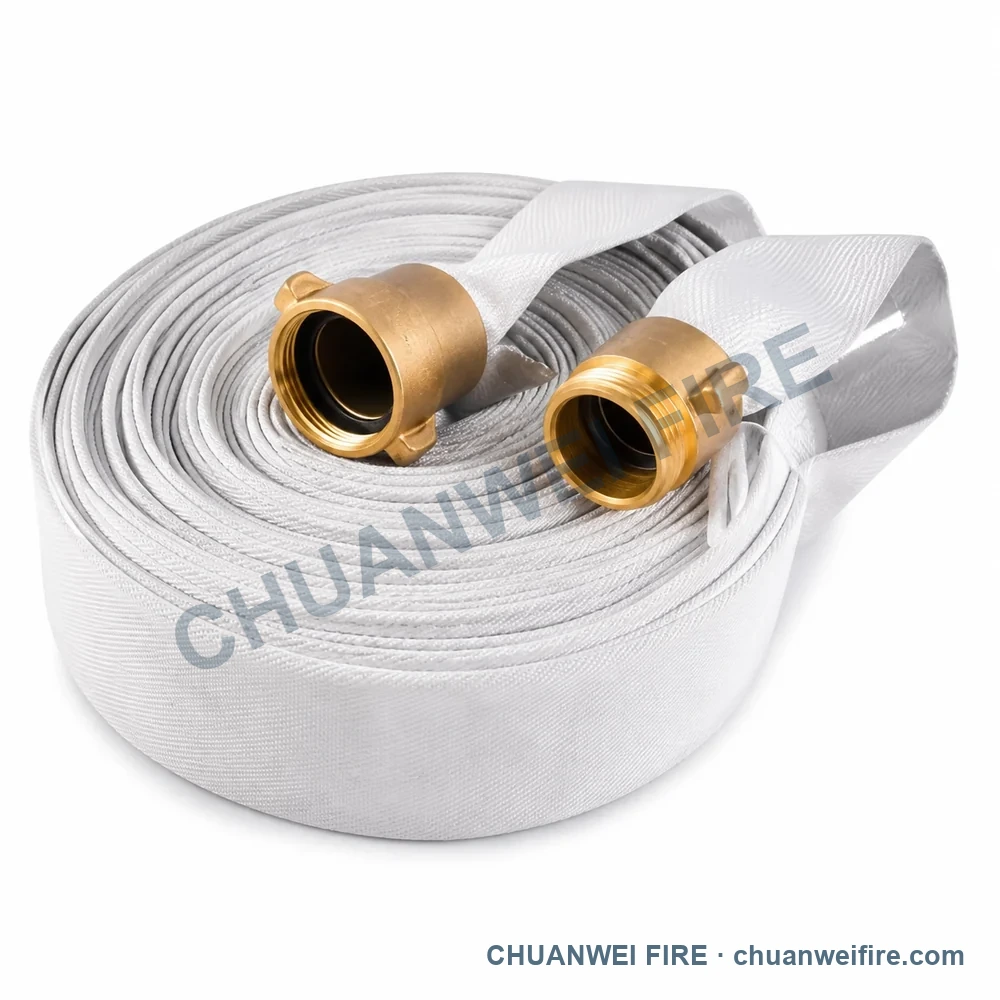
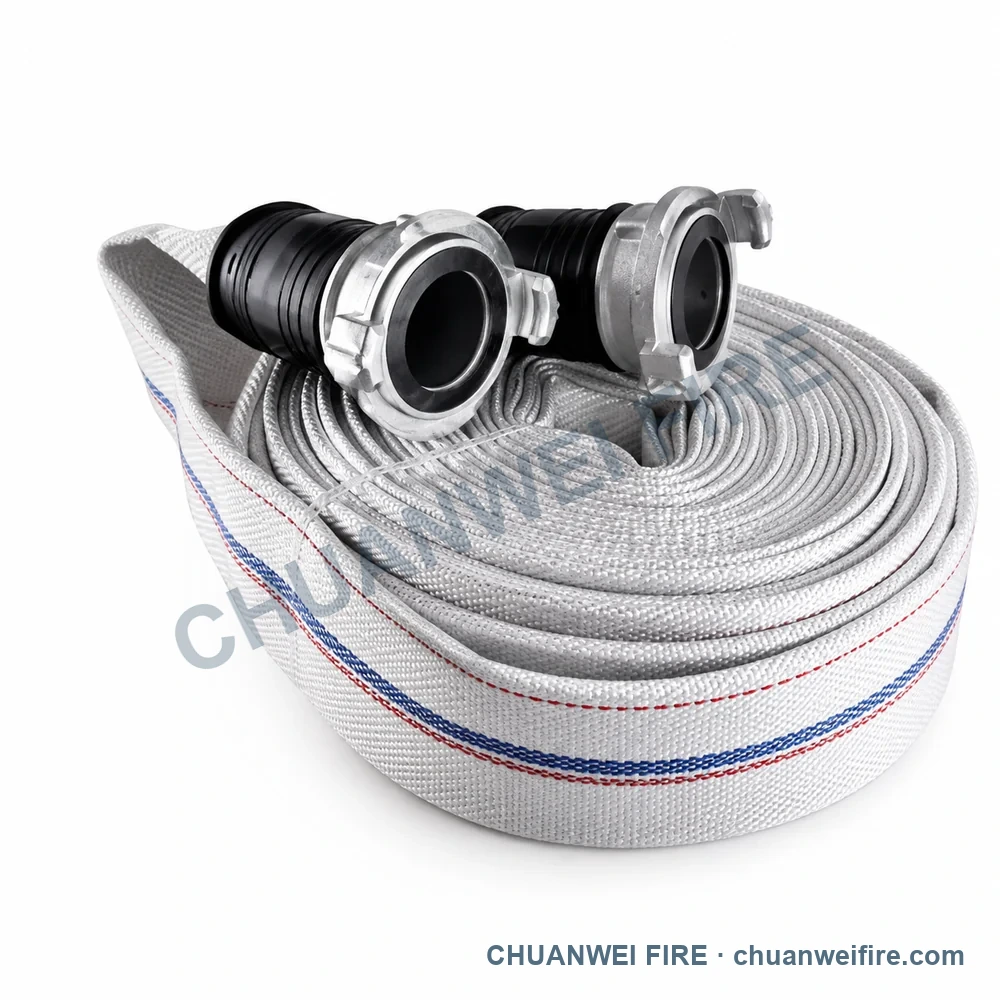
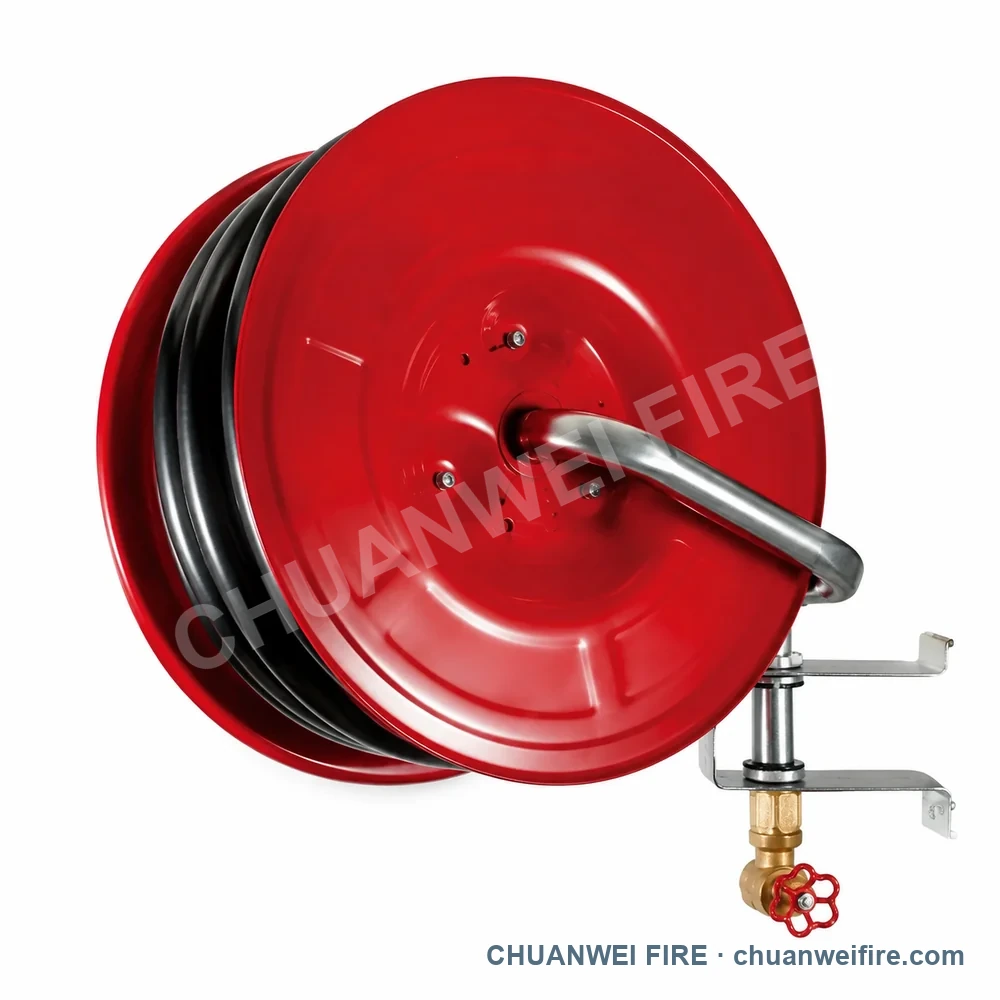

مجموعة خرطوم حريق بتشطيب نحاسي بتوصيل إدخال أبيض
بيانات التوصيل أو الأبعاد في المصدر: inlet 1.5 in BS336 · inlet 2 in BS336 · inlet 2.5 in BS336
4 تكوينات متاحة من الكتالوج المقدم
استخدم صور التكوين لتحديد المنتج المطلوب، ثم أكد التوصيل والمواد وبيانات الأداء مع عرض السعر.
تُؤكد المواصفات النهائية وترتيب المنتج في عرض السعر والرسم المعتمد.
بيانات التوصيل أو الأبعاد في المصدر: inlet 1.5 in BS336 · inlet 2 in BS336 · inlet 2.5 in BS336

بيانات التوصيل أو الأبعاد في المصدر: inlet 1.5 in NH · inlet 2.5 in NH

بيانات التوصيل أو الأبعاد في المصدر: inlet 2 in GOST · inlet 2.5 in GOST

بيانات التوصيل أو الأبعاد في المصدر: inlet Ø32 mm; outlet 15.6 mm
تُؤكد المواصفات النهائية وترتيب المنتج في عرض السعر والرسم المعتمد.
صور التكوينات
افتح كل صورة لمقارنة الشكل العام. يجب تأكيد التفاصيل الصغيرة واللولب والعلامات المصبوبة مع صورة أصلية أو عينة أو رسم معتمد.
نطاق البيانات
نُقلت قيم التوصيل والأبعاد الظاهرة في الكتالوج لتسهيل اختيار التكوين المناسب، وتُؤكد مواصفات الطلب النهائية في عرض السعر.
التكوينات المتاحة
يعرض كل صف التكوين وقيم التوصيل أو الأبعاد الظاهرة في الكتالوج المقدم.
| التكوين | بيانات التوصيل أو الأبعاد في المصدر |
|---|---|
| مجموعة خرطوم حريق بتشطيب نحاسي بتوصيل إدخال أبيض | inlet 1.5 in BS336 · inlet 2 in BS336 · inlet 2.5 in BS336 |
| مجموعة خرطوم حريق بتشطيب نحاسي ملولب أبيض | inlet 1.5 in NH · inlet 2.5 in NH |
| مجموعة خرطوم حريق بتشطيب فضي بوصلة مخلبية مخطط | inlet 2 in GOST · inlet 2.5 in GOST |
| بكرة خرطوم حريق بتشطيب فضي مثبت بحامل أحمر | inlet Ø32 mm; outlet 15.6 mm |
تأكيد عرض السعر
أرسل صورة التكوين والمقاس ونوع التوصيل والمواد وضغط التشغيل والكمية والوجهة. يثبت عرض السعر والرسم المعتمد مواصفة التوريد النهائية.
أدرج التكوين والتوصيل والمواد والضغط والكمية وبلد الوجهة.